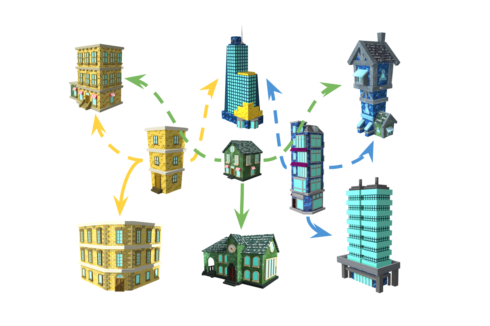

Product Design, Game Development, Augmented Reality
May - Aug 2019
Game Development, Product Design
Unity, C#
Project Overview
Build A City is an interactive game developed by Team Spark for the client, Thinkingbox. The goal was to create an Out-Of-Home (OOH) installation that focused on using new and exciting technology for a unique user experience. This entailed imagining the installation for a particular public space (such as mall, airport, comic-con event, etc.) and pitching it as an on-site activation for a client and/or idea of our choice.
The Idea
The idea of the project was to create an interactive game that took real-world interactions of building with blocks and augment the experience to a virtual space. Each physical block represents a type of building which, when placed on a game board, appears as a virtual rendering of that building on screen. In this way, players can arrange blocks to create a city of their own. Players are encouraged to collaborate and build a sustainable city. After they submit their entry, they can view a 360 model of the city they just created and share it with others on social media.
A basic prototype developed in AR Kit for iOS
Assessing Technical Solutions & Limitations
Our first idea was to develop an Augmented Reality (AR) app to recognize physical blocks, while allowing the user to place virtual objects on and around them to build the city.
However, we discovered that there current AR technology does not support simultaneous tracking of multiple 3D objects. While ARKit allows for extended tracking, it can still only actively track 1 object at a time. Furthermore, it did not have a smooth user experience: recognition took a few seconds and had jitters and lags in movement of the blocks.
On further research, we came up with a new solution. Since we were building an on-site installation, we had room to control the apparatus and environment of the project.
Using copper tapes, we could use customize the blocks such that when a player places them on a touch-screen base, it would recognize the block. This was due to the conductive nature of the tape which would transfer the charge from the user's fingers to the touch-screen. Furthermore, we added unique angular arrangement at the base so that different blocks can be recognized as separate buildings.
We developed the game as an interactive game in Unity. We developed a server application which renders a collaborative game-view where players observe the city being virtually constructed — this allows for a multiplayer experience. I implemented the Unity Low Level API (LLAPI), which uses UDP on the Transport Layer to share information between clients and servers.
Combinations
User Experience Research
How might we make users place the blocks in the way we want them to?
The purpose of this user testing was to uncover how we could guide users to build blocks through our visual design. In our installation, we do not want users to stack the blocks but, instead, have them sprawl across the surface.

The Task
Ask users to ignore the appearance (colour) of the blocks, and tell them the only difference would be the size of each. Then, ask users to fill one map at a time (in 2 minutes) with blocks according to the visual design of each map. Record the result, observe the user journey, and gather insights on the decision making.
Results
We found that the dotted line works well in terms of indicating where to put the blocks. We found that such a setup had a quicker on-boarding experience for the user and provided a natural understanding of the game's objective.
Cognitive Walkthroughs & Usability Testing
Purpose
To simulate the installation environment and observe how users will interact with the blocks, including their reaction to the virtual world.
Method
We used a projector to project a digital map on a desk as the user interface, and have a display screen as the output of actions. Next, we asked users to start playing with it freely. At the same time, we use a tablet behind the scene to simulate users’ action in order to make the corresponding reaction on the display screen.
Observations
Defining a Product-Market Fit